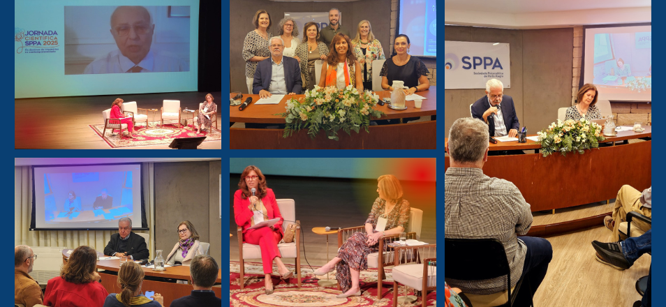
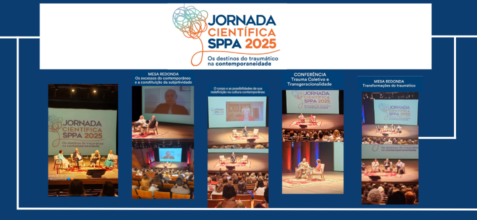

Encontros, discussões pré-congresso e Jornada Científica debatem temas contemporâneos
- 
 Científica prepara a jornada 2025, com o tema “Os destinos do traumático na contemporaneidade”
Científica prepara a jornada 2025, com o tema “Os destinos do traumático na contemporaneidade”
Em 15 de março, o ano científico de 2025 foi inaugurado com um encontro sobre “A construção da subjetividade e suas obstruções: as diversas faces do superego” com o convidado Luis Cláudio Figueiredo. Um café de boas-vindas reunindo a todos e a presença física do convidado proporcionaram um clima de alegria pelo reencontro e de satisfação com a discussão viabilizada por tema tão instigante.
Nos dias 28 e 29 de março, a SPPA e a SBPdePA receberam alguns integrantes da diretoria da Febrapsi para a Jornada Pré-Congresso da mesma, intitulado “Sexualidade: o tumulto das diferenças”. Na sexta-feira, o encontro foi em nossa sede para discutir “Sexualidade: o tumulto das diferenças. Que tumulto é esse?”, ocasião em que Daniela Bormann (Febrapsi), Angela Piva (SBPdePA) e Maria Cristina Vasconcelos (SPPA) explanaram suas ideias. No sábado, o encontro foi na sede da SBdePA, quando Berta Hoffmann Azevedo (Febrapsi), Marli Bergel (SPPA) e Gley Costa (SBPdePA) trouxeram suas ideias para discutir “Desde Freud, o que mudou na sexualidade?”. Esse foi um encontro importante de aquecimento para o 30º Congresso da Febrapsi, que ocorrerá em Gramado de 22 a 25 de outubro do presente ano.
De 24 a 26 de abril aconteceu a Jornada Científica da SPPA 2025, no Teatro Unisinos, com o tema “Os destinos do traumático na contemporaneidade”. Além da excelência das mesas, o clima alegre de confraternização nos espaços de coffee e coquetel deixaram os participantes da jornada muito satisfeitos. Alessandra Lemma (BPAS), Norberto Marucco (APA) e Izildinha Baptista Nogueira (USP), junto com nossos convidados da casa (SPPA), abrilhantaram a jornada com falas sensíveis, profundas e contemporâneas.
Em 8 de maio, a Quinta Científica foi contemplada com o trabalho “Transformações em alucinose: o destino de uma primavera imortal”, apresentado pela psicanalista Elena Beatriz Tomasel (Membro Efetivo da SPPA) e comentado por Adriana Nagalli de Oliveira (Analista didata da SBPdeSP e da SBPCamp). O tema, aliado às exposições da apresentadora e da comentarista, rendeu uma boa discussão com os presentes.
No dia 22 de maio, a psicanalista Anne Lise di Moisè S. Silveira Scappaticci (membro efetivo e didata da Sociedade Brasileira de Psicanálise de São Paulo) foi a convidada para falar sobre “Psicanálise, uma atividade autobiográfica”, proporcionando um ótimo debate com o público.
Em 05 de junho, o tema da primeira Quinta Científica do mês foi “Novas reflexões sobre o processo civilizatório a partir de uma expansão do conceito de sublimação de Jean Laplanche”. José Carlos Calich, membro efetivo e didata da SPPA, foi o apresentador.
Em 28 de junho, para falar sobre “Trauma, Subjetividade e Subjetalidade”, nosso convidado foi Dominique Scarfone (Psicanalista da Sociedade Psicanalítica de Montreal, professor e pesquisador do departamento de psicologia da Universidade de Montreal, Vencedor do Prêmio Sigourney - 2024), em uma atividade que incluiu não só a sua conferência como uma discussão clínica.